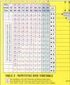

Изданная впервые в 1555 году книга пророчеств Нострадамуса содержала на титульном листе нумерологический ключ. Он появлялся на титульных листах всех последующих прижизненных изданий "Столетий". Но в последующие века был постепенно вытеснен и утратил то значение, которое предавал ему Нострадамус. Хотя он не зря выносил ключ в самое начало книги. Разгадав его код, посвященный смог бы восстановить последовательную картину будущего. Но ключ из предосторожности перед необдуманными попытками "искателей" будущего Нострадамус зашифровал кодом, секрет которого до сих пор остается загадкой.
Средневековые кабалисты тщательно зашифровали свои знания. Разгадка шифров, как правило, находилась в самих рисунках и чертежах. Так, при разгадке ключа может помочь самая незначительная деталь. В XIX веке Цадкиэль и Рафаэль, приблизившись к разгадке нумерологического ключа, составили на основе своих изысканий таблицы, которые позволяют заглянуть в будущее и скрытое настоящее. Они так сообщают о своей работе: "Нострадамус благосклонно отнесся к нашим изысканиям и помог разработать правила пользования таблицами". Но, к сожалению, кроме этих таблиц ничего не осталось от их замечательных в своем роде исследований. Была ли разгадка ключа у них на ладони или они разгадали его не полностью, наверное, останется тайной навсегда.
Таблицы, дошедшие до нас, разбиты для удобства пользования на несколько разделов. Выбрав нужный раздел, уточните тему и сконцентрируйтесь. Когда Вы ощутили, что достигли концентрации на избранном вопросе, можете начинать ставить на бумаге три ряда точек, располагая их один под другим, пока не почувствуете, что имеющаяся у Вас информация переосмыслена. Попытайтесь в своей концентрации прослеживать "ритм", который связывает движения Вашей руки с избранным вопросом. Закончить ставить точки надо в тот момент, когда Вы как бы завершаете одну из фаз колебательного процесса. Для удобства Вы можете ставить небольшие черточки. В этом состоит один из способов метода "выделения колебаний". Существует еще способ "маятника" и способ "спирали", но речь о них выходит за пределы этой методики.
Затем отсчитайте, начиная с первой точки, по девять точек, зачеркивая десятую, пока не получите остаток, меньший или равный девяти (основному из первочисел, поглощающему в себе все остальные). В таблице, которую Вы выбрали, начните отсчет букв с числа получившегося остатка, пока не дойдете до девяти. Каждую девятую букву выписывайте на бумагу. Это будет ответ на Ваш вопрос. .Пример: вопрос - "Буду ли я счастлив в браке?"
Начинаем считать с четырех. Представим, что четыре буквы Вы уже сосчитали. Первая буква таблицы будет, по Вашему счету, шестой, а пятая буква таблицы - девятой. Ее и надо выписывать, и далее выписывать каждую девятую букву, пока не дойдете, таким образом, до конца таблиц).i (см. пример). Получаем: "после ссор будет мир и счастье"
 ПОРЯДОК ОБРАЩЕНИЯ К ТАБЛИЦАМ
Порядок обращения к таблицам имеет некоторые запреты на повтор из-за случаев "неравновесного состояния" концентрации, изменения вхождения "контакта" в "ритм" и явления "шума". Нельзя подгонять свои кармические связи под желаемое. Для повторного обращения к вопросу требуется прошествие времени, "очищение сознания" и новая концентрация. Достижение абсолютной расшифровки "ритма" достигается лишь оптимальным количеством обращений в определенные временные сроки.
ТАБЛИЦА 1.
Осуществится ли задуманное дело?
КДСБИКЕДБ-ФПЕСАСЕЫВЛРЗПЖТЛСЯЬО-0 ДЬАТЩШСОЛО--РЕЕИБНММКЕЙ--УЕУОАЕ-ВЛВН-ЛК-С-УИИПО-ЧЛЛЧ-ЕОКСЕАЕШИ--0 АМЕСЕ-ПВ-Ж----НРЕДАВББУОИРА-ЫОО-ГД Е-Б-ЖЛСИЕ-ДЕОЬЬЕ-ТЕОЛЖЕШБЗ-ГСАИЙЕ ЯАНОТ-Д---МЕ-А-А-Д-0--В-Е-Д-ЧС-А-Т-Р -ИР-Т-Е-0-ТА-Ь---В-ЬЗ У-Д Л- -А Е--Л Г--Е К--К 0--0---
ТАБЛИЦА 2.
Какие известия меня ждут?
НХИЧИПЗЖНЕО-ТЗОАДЕОРХО--ВИ-ЖОО-Х ПИТТИШРПОЛСЕЕДИООЛОИ--АЕШСОДТТК Н-ИЕДА-ООНИЕЕАМО-ТЫ--Т--ТЧОЕПИЕВВ -ТР-Р---АДОЫИИПТЖШЕ-Е-ЯЛОАИЯО-ПТО -РМНЖЗРНХИ--ИИАОЫИ-БОЙДСТЕЕПРТ-АЛ И--ООМВЕУВ--ЖСЕАТЖО--НИРШЕИР--ЕТЕ И-ВЕ--Т-ЕХПАЧ--ЕЯТ-ОЕИ---РС-ЛТВ---ОЯ -УЕЫ---С--Ч-Е---ТВ-ИП НА-ТО Ы М - ЬЛ Й---У Ч В---И Е---Т--- -К---В
ТАБЛИЦА 3.
Высоко ли я поднимусь наверх?
ЛТДПБТСКМЕОАОЕЕМОАЖЛ-ЗЗРЕГЛАЬЕНД ПЛОО-КСАНЕЫ-ДНОЛЙАНМЮУА-ИТ-И-ПШ-Е-ЕБЕСИИПСН-Е-УТЕЕЛАСЗИДЕ-ЧИУЕД-ЬР ЛИ-ЧБНТБ-Е-ИИЯУРАХЖКСТ--У-ОААПЕИПД ПЧТШОС-Р-ОЕЬИЛЬДИВМТ--Ь-ОЗСО-ЕНЗУ СЫЕГПСЕУ.ПТВ-АОЛ-ЕРИАПЕГИСТАГЕЕТУ-В ЕВНТР-БМА-ЛЕ-Е-ИОРСЯТ-Т-ТЖИВТЕ-Р-Ь ЕТОЬ--У--ШЬЕ---Т-ЛЬ--Л И--ОЮ Ш В -БД АС-АЬ ЕТ-ЯМ Т---ЫА-НИ--- - --И У-Е М --А
ТАБЛИЦА 4.
В какой области меня ждет удовлетворение?
ПБВПВВНПВУУООСАЕЬАТДЛ-ЯМ-ЯШИЕК ТК-ИНЕ-ШОВ-РСИ-ЯБМОСАКЦУС--ЕВБАУД НРРМЕОЛ-ОЫАОУРТ-КВ-ЗД-ЧАБ-ЛДБИУО- ЫРЕАРЛМКД-ЮТ-АСУ-УВМВОСЯ-ЗШ-КОЧЫ -ННЕСЕРИВЛОА-Е-Е-АИСЙПЛВНСТСИ-РЕС ИЛЬОТСА-ЕЕЕ-ЙЬВЗИГ-ПС--ОДСДБЫЕТЛЙ НКАУ-БРЮ-ИА-Д-ЯУБШКЛТЕ--ДУЕ--ЯТ-ТН ЮС-БН--00-Т-ЫЕВ---СО--Т--НСУК-В-С-И ТМ Е-ГАУ--С-К-ДТ---Е-С-ЕЬ Е
ТАБЛИЦА 5.
В каком деле а найду свою удачу?
НЫМОЛВГХФОЕАТЮОДОАСЗЛ-Б-ЕДЛОД-ТО 6-ИАМЕЯВВТСТЛ--ЗОЬИПЬЕОГЫЕ-РО-ЙКД КГНАРФ-УЕ-ОЕНТРНН-Д--И-АЕЕБАБПИТН-ЙУ-00-А1Н-ДВБЖОМОАЛЕСРАЧ-МШОТЕАР КП-ЕВ-М--ООСЛИВ-НАВБА-ТАТИ--ЕПВЬШЕ КЗИДО---ЛОА-АГИ-ТОМГВ-ИЗ-РМУОЕ--Б- У--РШ-СЕ-ДВНИА ЛЕТН-РД--АТЬИ-АВ --Д-СИ-НЕ--ЕДЯ--ТР--ЕО-Л-ОЕ--ТБНА-МЙ ---РЕП А-Ш ПИ О - 1 У Ш И Ш Ь
ТАБЛИЦА 6.
Буду ли я обладать богатством?
БВНРЖККТНЫ-ИАДАТОЕССЧНИПОТ-ТКТОТ Л--ВРРО-ЕЯРП-ЕО-И--АРДЕМНЛИТНИЕ-НЕ И-ООГНВО--НЧ-ОЬЫСВПЕИВЖГШТОО-ТС-АЕИЗЗУ-ТКХ--НДПКАТ-СПИНУАЕОСИОКОС МТ-ЧЛКА-ТЕ-НАЬОЕНИНТАСНЙТОТЬО-ТЕ-- -Е-МДЬЕ-ИН--УЕЕ--ЗЕС--Л - В - Б Е - - - Н С 0-0 ИКИ-ГГ---ЧО---0---ЕРД-ДЖ---ГОЕ -А 0-Н-Е Ь-Т Г И
ТАБЛИЦА 7.
Будет ли польза от осуществления задуманного?
УКОПНРПГИПОГРЕАРДЗОШРИ-ВЙЕОТКО-М Н---РИМНЕОСРВЕННЕЧЕОАСБЫАСИ-ГСЕИ-ЯОТРЛТГВС-ГЕААЯО-ЛПЛ-ВСП-ВЕОАЖНИА МСКЛСЕОИ-ОЕИЬИММ-ДЖ--ЗИЧУДАЕС-А-У-А-ТИ--ВГВЖТЕЛ-ВЕАОЕЕ-Ы-ЫЛ-3-ТИ--Д ИПДМЕЗН-ЕКЕААРВА-ТИРЕЛЯЛ---ЕЕТЫ-ЕЭ ---ДСЕТЧТ--Д-Я-АЬО--ЕС-ДМ ЛВ-Е-П- --АИ-ЛНО Н-АЕЛ---РЬ---Ь---АЯ-РПЗ-- -ЗМ-АРУ---РИ-СИ У--ТБ Ш У Ы---А--ТЛ---Ю---Ь---Т С---А---Я--- П О Т Е Р- Я
ТАБЛИЦА 8.
Как завершится известное дело?
КНПГГКТОНАЕРОООИТАКОИРРНШК--ЖГЯЕ ЦЕАЧЗИОЧ-А-ЖУАДТОС-ЕИЖХАО--ИДТООН ВСП-ЕЕЕТНЬЫОКШС-ИЫТРБРЬЬДТЙЕООА--ОЕ-С-ЙЯДИБ-КБН--А-РТО-ЕБНЛБОАНК-Е ЕЬУ-КЕ-БДТШДН-ЦНЫА-ЕЕЕИ-ЕВ-Е-Т--ВП АБМБ-ЗБНРЕЕУУЛАУИИТЗ.ДГРДМЯ---ЕГЬ ЕАТ-Т-ШЧСТНН-Е-ЬЕЯ-ИО-Б ЕС-Я--В- .-Т А---Я М--- М
ТАБЛИЦА 9.
Смогу ли я победить конкурентов?
ДСОДКЕИЛКАПДЛАС-ЕА-ЕОЯКЛКГКЕШЛ--И РК-СИЕВЖ-ЫОПЛ-ЕАРНЛ-ОИНТСЕЕЬПС-ЕЕ -Б-ЯЕТВ--УИБ-РЕНТНМЙУЕОЛИОО--ДС-ИМ Р-БПЕТДШАОБОАТЬАЬНПЕЛДЕ---ИЯЗЬЕ-Д НТЕС-ШТЖАЕА-ЬПЕ-А-гКЭ-0-НЛНК-Т-ЛСО ЕЕИИО-ЬЙ-ТКН---ЗЛПЬУУПВ-ЫЫЫ-ДТОЫ- --ТСАЬС---НАИ--П---УЙЛЛДИ---ЖТ-ЕАШ- --ЕЕ-ТЛЬ---НС-ЕЕ Ь-ТК Ь О -
ТАБЛИЦА 10.
Как закончится известное происшествие?
ВПНПЕКВПКСЛЕОСОСОАЕОПКЛМЕСК-ХРАИУ -ЛОБОИ---БЕВЫЙЯНХСУ-ОС-ТЕОГДТ-ТРН-Р ОЕУВРЕОПОР1ЧООЗСО Ш Е - - Л - У Т 3 О Т X В О 3 Л ЕД-ЬОЫКАЬЙНТ-РГНБТ-ООТОЛОУАН--ОШЯ-ДТЕПИТОНТЕ--0---ЕАТДИММН-ТКСЛЗЕНЕ--ОЯЯБРО--СВ--ЕИГУ-00-ВЖТОТ-Л--ААЕ-0-Н И-СТСДН-Ц---ЬЬРЕ-ЕП УТ--0 3---Л-- --Е---0 Й---Т Н О
ТАБЛИЦА 11.
Действовать ли в задуманном направлении?
ДДСНДПКРПЕАЛАЕРОЕОЙ-И-СИМЗЛСВШБ ЯПУУЗТАКОТЯ-ЛАВСОГЬТПЬ-0-МА-СОТНВ Ж--РТЛАОАДМНАВТТ-1ЕНАЗИИЫБЫОД-ЯН -У.--ГЕП-АНДХБОЙОЖ-ЕЕОО-СДДА-1РЛКЯУ Д-Д-ОЬО-МУКАМШШНААТОДИОАК-Й-МУН- ЯУС-КУТИН-РАПУ--МЕУЕМРДИЖА1ДН-ЕА ЕЛ-АТНЖ-НЛЬЕЧОЕДНЕАНЩАВ-ЕЕ-ЕАЕ--П --АМЯ---Л-ПЛО-Л--0-ОТГ-У--Ш-ЙЫО-Ч--А -ДН--Ш-- Й-ИА--Е
ТАБЛИЦА 12.
Как долго я проживу?
КЖВПСПУОПАИАРАРМЧРКТМИМАЕЕО-Ь--И ВРНЖБ--Р-НЕЬИУЕ-АСУН-ВДЩПЗОКН-ЕЕЕ РУКОО-ТТ-ЕМРВС-ЕЕ-ДНА-Т С О Щ - Ь - - Ж' -ТЙА И-О-Е ТОИЖТ ЬСТИЕ Т -3 ТАЕН--ИО-АЛЩИ---Ч-КОЕ Е--С- Д-ВПН--Ь-ОСАРЬС---ЖЕМО-Т---ДБ-Ж-0-- -ЕЕ-Й--И-ДТ--В О F- -Е- -П- Л С - - ! - -Р- Г t - - Е - - О М А ЖНЯПЖ--Д-ИО-РИ--0-В1-А ЗН-Л-ЕО-ВНЯ-Г-Т--НЬНДОЛЕ--У-ЧО-Е--Ж К-ИЛ-Т--ИО-ТГ ЗВ-ЬО Н--- Ь---
ТАБЛИЦА 13.
Какая болезнь явится причиной моей смерти?
ЕОКЭББУНЗСЧАТООБЕАЛЕКАГЛЕ-ВИН---Е РБИ-ЬМБПЗИЕСЛ-ИООНТСЙЕОЛЛМЬЕПТЧП ОЕО--0-ИАСЗЖВПКОТСТНЕ-РОТЬНЬЬТНИЙ --0---АЧТУТ-БПИКИЕХОНУР-АНСО-ОДОБЗ УЬДВ-ЕЙОА--АЫВТДЛНИБ-ЗЫ-ЕЁИ-ОИДЗБ ТЗЕПЛ-ОДО-Н-ОЕВРОЖБЬИЧЗНОРЬО-ЩУН ИВОЯЙПИВЬМЕВ-ТР-С-АЕЕ-ЕОПТПН1Е-СЙ РВРИ-Т-ЬДИУОЯ ЕЧЕЙ Д1ИТД Р -Н-Е У-УХТ Г--0 0--Р И - - О - Ш 0-
ТАБЛИЦА 14.
Поправится ли от болезни известное лицо?
ЕОКЭББУНЗСЧАТООБЕАЛЕКАГЛЕ-ВИН---Е РБИ-ЬМБПЗИЕСЛ-ИООНТСИЕОЛЛМЬЕПТЧП ОЕО--0-ИАСЗЖВПКОТСТНЕ-РОТЬНЬЬТНИЙ --0---АЧТУТ-БПИКИЕХОКУР-АНСО-ОДОЬЗ УЬДВ-ЕЙОА--АЫВ1ДЛНИБ-ЗЫ-ЕЕИ-ОЙДЗБ ТЗЕПЛ-ОДО-Н-ОЕВРОЖБЬЙЧЗНОРЬО-ЩУН ИВОЯЙПИВЬМЕВ-ТР-С-АЕЕ-ЕОПТПН1Е-СЙ РВРИ-Т-ЬДИУОЯ ЕЧЕЙ Д Т И Т Д - - - - Р - Н-Е У-УХТ Г--О 0--Р Й--0-- Ш 0-
ТАБЛИЦА 15.
Что представляет из себя мой скрытый враг?
ООИВЛТВНОННМОЕОЫЕН--ЯЛНТ--И1В-КЬ-СЛ-ОЫЕИ-КАОСТГМ-ВТМВА-ЛУПАОИИМОЯ -РШ--ТИ-ДЛИ-ВСЕ-КИЕХТАЕ--СОТГОАИБР КМ-ИДЙ-ЕЫО-ДОЯНЗ-БРВРНТЫАТКОЫУ--Й ВАУ--Г-В-ИЙ-РДО--ВДНВАУМ-ОРУЫ-СМ--ВАЕЙМКАВ-ЕГТ-УРЕА-Ч--ВТОТМ-Ь--РНЮЕ --Е--АОТ---Й--ГЙС Я---Ш---В---К- ..0 У---Д Р---Е Е
ТАБЛИЦА 16.
Как избавиться от опасности?
ОНСБСКНИБСЁОЕПУЕЗОТ-НЗИД-БЙОР-ДТ АИАТРАИЕЕ-ГВЕОЗ-Я-ИРЬСЖЖЗТИГА!ЬНИ ДЕ-ОЙЕ-ОГОЛВЛТСГСАРЬАКЕЬРТЙОНСА-- ЯЬТВО--СОЗ-ЕЬСОТ-ТИИ-ЕТБУО---К-ЬОД ГЭНС-В-ЙАНГУОСАВД-ЕОЖБЕСАЕИМИНРБ -ШТ--ЗААЕС--НИМ-Н-ПВСИ-АЧНЗАРП Н - И ОАСАОКЕ-ССВУГРА--ТТИТ-0-Ш-0 b>V - - Н - А -Т-Т--0-Л-А-И--Й-И Т -F--
ТАБЛИЦА 17.
Настоящий ли друг задуманное лицо?
БМОДНОДСДОЯСРЕНОВРЙГТУ--ВОУТКОГС ВЕЙЖЕОР-ААР-БС-ООЖСЯГАЬСЖЧА-ЙЛ--Т НЕЙН-АСОЕОН-ЕНЗ-БЛ-ЬН-0-НМЕС-АП-СИ АТОХ-ОПММН-ХОШДРО-ЩЖРРЕВОТМИЕАО ЮЕВРОКСНШ-ДЕОЖОТЯИНЕРКЕВКЙЙЕТЯ-Т . О И О - С - - - Б - С Г - К - - - Ы - П Н - И - - - Т - АО - Н - - - ь - Т Ш - Е ЬЕ-Ш---0--Н-Ь---П--И-- - --А--Я С Н А
ТАБЛИЦА 18.
От кого мне ждать опасности?
СБЗБВХЛНИЧОАУЫИУЕСАЛДД-ТК-КСЬАЕС РАУРТШВТАОВКЕЬОИ-МССЛНЯЕТНИТТОН---0-ьВНОМБИ-ЕЮОЯСНО-НГ--ЙТОЛОЕОЗВ ТЬГЬС--Л-Е-ОШЛОВОЛСВ-ОЕБССЮЬАДЕП РЕТБ-ША-ИАГЬВИЕЖСГДДЮИ--ЕЧ-УА--ОС -АСЕ-НННЧБСЧТРЕЕОАЕТАЕА---СДЬССЗПП ПТАЕТЬРООРЬ--Ь-УММИЕ--Е-ШООД АЖ ЩЕ ЕЕН-Т ТШИ Е Ь К - -
ТАБЛИЦА 19.
Кто может дать мне счастье?
ТНСОТБНИООИПГОЕЕЗТ-КРЛТЗ-М-ЧТОЯ--ИЕДТОСНКЛЗНОО-ИИОЮБИБ-Е-ТГБЕТРВГ СЕОВГЕАЫОВС-ИАС---ОЬЛ-ЙЬДПВЕ-ЮНТ-ОРА-ИБЕЕИБЕМС-И---РД-ЕВТБЕПАПНРЫЕ УГР-ОЕД--ДОИНЛ-ЦУ-Е-ДЕАДЕВ-ТТЕ-ГА-И --ЕТИАС-Д-СП-ЩЕТ-Е-ЧЕКУТ--Т-АР-ТЕ--Е -СЬВ Т-А-В--Е-Ь-М-Е--Г-Я---Р--0--- -Н О
ТАБЛИЦА 20.
Сохраняет ли мне верность любимый человек?
КННКЧНВДВУЕЕАТЕАААД--КО-МЖШАМЗ--С -ЕИ-УААППС--ИЧСУОООНСГТТКССХЕООЕА НЕОР-ИЛ-ВЕЕБАДНКИЛТШСЧУЕА-ЯСЬТЯМ Н-ПЙЯ-ВЮАИТОТ-ТУТЙЯУЛЕТОЙ-Т-ДУ-А-Т ВЕБАЧЕКИЕЕ-Е-ИГ---РОСИТОИСЕНБП-Е--ОГО-ОН-ЙОБОСЭЧИВЗТЕ-ТТВТЕМКРНЬОЕК РЕЛЕЕ-МНАННИШВ--Н-ОЯКЬЕ--Ы-СТН-Р-- - -ТБЕ-Н Ь-Т-0 С-С Я-Т ..И---
ТАБЛИЦА 21.
Найду ли я счастье в любви?
СБЗБВХЛНИЧОАУЫИУЕСАЛДД-ТК-КСЬАЕС РАУРТШВТАОВКЕЬОИ-МССЛНЯЕТНИТТОН---0-ЬВНОМБЙ-ЕЮОЯСНО-НГ--ЙТОЛОЕОЗВ ТЬГЬС--Л-Е-ОШЛОВОЛСВ-ОЕБССЮЬАДЕП РЕТБ-ША-ИАГЬВИЕЖСТДДЮИ--ЕЧ-УА--ОС -АСЕ-НННЧБСЧТРЕЕОАЕТАЕА---СДЬССЗПП ПТАЕТЬРООРЬ--Ь-УММИЕ--Е-ШООД А ЖЩЕ ЕЕН-Т ТШЙ ЕЬК--
ТАБЛИЦА 22.
Сохраняет ли верность мой супруг?
ВВХОВРВВМСЕОНСЕЕЕОЕРЧ-ЕВРРЖ-ЕЕЧ-Н ННЕЗНТЙРОЫОТА--САС-СЕВКЙТВТЛТ-ИОЗ -НЬИЬПСГМКО---ОИДЕА-ПВРЛТАНКНЛЫОО --ИИО-ЖЖОСТСЧХСДИТПЫЕОААТ-И-ЕГЕМ ЕЬВТНКО-ИТСА-0-Л-Ч--ЯСС-ЫИУ-В---БШ ЕВ-ЕП-ВОК-С--РО-АИОИТ-НЛ-МТ-ЗВ-ОН- ИС-МО-СО--Я-Е--ТС Н--Ы И---В--- .Т---Ю Ь
ТАБЛИЦА 23.
Скоро ли я выйду замуж или женюсь?
ЧККЕЛСТСВЕАОСОКРПСРКГЛВОУЕЕЕ-ДИИ РДШ-ЗЗА--ОНКД-А-ХТ-ОАОНХКОЕС--РЕОИ ТКОДДОСТПИУВАОГКИИТЩСЖ-ЙОТТЕЙЕЕД -ЛЕ--ЙМ-ОВЬ-ТТ--ПБЕКЭООДСРРДОТГ-ЕК ЕАУ-ОДСНОД-ТЛГАКЬРСН-ЕО-0-ОТЕВТ-ИР ---А 0--ВДР--В---ИОИ--А---ТВМ--Р-- -ВЕ---И Д Е Т
ТАБЛИЦА 24.
Буду ли я счастлив в браке?
ЕЕКППОЖКЕССРЕОЧИУЕЛЛАРСЕЗДЗИИЙЕЛ ННА---НМЕЬЬ---НОЕ ЕСЛСР--Л--ТЕС Е--Ю-ЖИТОДБКБЕИ-СРКЕРВСТ-Я-ОЗИИТЬ --БС-В-Ь-С-УТСА--КО-ДНВЯ--АЙИЕЫО-Н-' КД-ТЙБ-ЕВ-У---0-ТЗ-Т-МВДВ-А-СПИРЫЫ -ИСЯРРА-Н-МО--И-КНЕСНБХТИ-ИСЧОАОР -БЧЕАСКРЕСУТТСТИОТЧДО-ТЬ-ШСАЕ--Ь-- ОЯСТ--Я Т --Ь Е
ТАБЛИЦА 25.
Буду ли я иметь детей?
ЕСДДМСИЗМСЫЕЕО-САЕЛНТТЛБПЧШИОЕИ ИОРЕО-ВЙ-ГГАМКНЬ-БЕОВ--ЕЯНУСМЬВИ- -ЕДЬ-ТА-БИ-У-ВЕМИУ-ВТИ-С-АДД---ДЬДЛ ЕОКАДУ-ЕЕТЧА-АШИТНЕЕПНСЕЛИЬ-РУАТ- И-КПИСС-Д-ПАР-ТЛВЕНУЯЕКЕЕАГЕС-СА-Д МЙ-ТТЫКНН--БОЕЩ-АИ-БУЕЛЕЗХК-УД-ЕН АОИ-ДЕ-ЖЫХД--УТ-К-ОЯН-Т--А-ТТЕ--Д--- И-Т--Е---Т Т---Е Е И
ТАБЛИЦА 26.
Стоит ли делать приобретение?
КППНКСКПТЕРРЕУКУОО-ОИ-ПОПЛЛПДМБИ РЛЬЬРАЕЫТЕЕЗКОТРЛЕЕНАОЖЬЬО--Н--И- --ОПОБЕТТСЗБОЕУСОРЕАЯК-ДЛ-УМБЗУОЕ ИУДЬОАПБТ-ЖН-ТТАЫ-ЕЕЕР-ЕЙЧОС-ЕАКЛ ТНТТП-ЗУЬЕО-ЬРЧ-ПН--П-ИЕПИОЭМОЛОМ РЛ-ТОКИБ-ЕА-ОЖУШРКЖ---НПНЕУДБ-УОК ИТПЕА-Д-ИЕЕИ-Б-АП--НТ-А-ЧР-ДНЬ---АО -ЕО--П--Д-НЕ--0--А-Ь---Р--Т-Г---0--Ь-И ---С Я
ТАБЛИЦА 27.
Вернется ли утраченное и потерянное?
СПНКСЗНДОКОЕОВААОТОТ-ГОБЙВЫРЕСДР УДОЩОРКАОДЕЛИ-ЯО-ВЬТЬТВНРОАГЕНЕС ООЧНЕ-0-ЕЕ-ЕН-И-Д--ННОИ-ЧОНПОЬЕ-ПТ ВАО---НОООЙТНПНЕТ-ЛДЕАОЕ-ЕВЬЕРЙС- ВРАНТЯДТОСЯМОЕНЕАТПЕ---ОТРДОТЕБ-- ЕААМЕЩЫ---ЕЮИ-ЕС---ТТНС-Т---Е-АННР- --С-ЙОАО---Ь-ТВД ЕАО-
ТАБЛИЦА28.
Возвратится ли отсутствующее лицо?
СНРССВОУЗКЕАКК-ТШАО-НООЧ-ИХРВЬРРЕ В-ОЕЕШООТАРТЕРЕ-ГВСЯИ-Н-ООЕ-ДТЧЕН Ч-РВОЕЕТАЕВГСМ-МСДНО-Е-Й-ЯОЬЗП-Д-0---ВОЗАСЖНБСРСА-РИИЫКАЛВНАДКЛОЩ ЕЙЕЗАООРЕ-С-УЕГ-ОНДИУ-ТДД-ИОТВВЕА У-ЯЖ-ЙЕ--М--Д-ДР--А-НИ-ИН--Т-ЕЧ-ШЕ-- Ь--К-ЬТ БА--С У---Я Д F- Т
ТАБЛИЦА 29.
Сулит ли судьба мне везение в игре?
ИПККПБВНВГУААОО-ЕСРСКЖДЙИ-ЕАТ-ДУТ ГТ--ИВЫМЕРОТДЛЫЙАСЕ-ЩОИИ-ЙЬ-ЧЕБ-Г ЖТ-ВТТРКРЕЕШАОААОАЛ-УМ---ЗЕАПЛ-ЖИ НЛТЕРЕСД-ЕАЕТЕРЧЕЛ ЖОАТОПВТВДВ СЕВР-АЫЕ-Т-ЛИОКИ-ИЬПЯНГ-ГЧ-ЯО-ЕОПР ЕО-ЛВСРРАМБНУЕЕООТ-МЕЧТТДИЬИА-ИР- -Г-ГНБТА--РПРЩУЕ---АОАИД ЕМТКЕ--- -ТНЬОТ ЕИ-В
ПРИМЕР
ТАБЛИЦА 24.
Буду ли я счастлив в браке? Е Е К П©0 Ж К Б С С Р Е@Ч И У Е Л Л А Р©Е 3 Д 3 И И И Е@ Н Н А - - - Н М(?Ь Ь - - - Н.О Q ЕС Л©Р - - Л - - Т Е(С:' Е - - Ю - Ж И Т©Д Б К Б Е И - С(РЖ Е Р В С Т - Я^Й 3 И И Т Ь - -©С - В - Ь - С -®Т С А - - К О -®H В Я - - А И И(?Ы О o Н - К Д -ФЙ Б-ЕВ-УОО-ТЗ-Т -@Б Д В - А - С П<И> Ы Ы - и С Я Р®А - Н - М О - ИЭ< Е С Н Б X Т@- И С Ч О А О Р^Б ЧЕАСКРЕ(О>ТТСТИОТ(Ч)ЦО-ТЬ-ШС(Д;Е- -ь--оя ©Т--Я---ЧТ> <Ь) (?>---
РАЗДЕЛЫ И ВОПРОСЫ ТАБЛИЦ:
I. О поприще, деле и состоянии.
1. Осуществится ли задуманное дело?
2. Какие известия меня ждут?
3. Высоко ли я поднимусь наверх?
4. В какой области меня ждет удовлетворение?
5. В каком деле я найду свою удачу?
6. Буду ли я обладать богатством?
7. Будет ли польза от осуществления задуманного?
8. Как завершится известное дело?
9. Смогу ли я победить конкурентов?
10. Как закончится известное происшествие?
11. Действовать ли в задуманном направлении?
II. О болезнях и смерти.
12. Как долго я проживу?
13. Какая болезнь явится причиной моей смерти?
14. Поправится ли от болезни известное лицо?
III. О друзьях, врагах и опасностях.
15. Что представляет из себя мой скрытый враг.
16. Как избавиться от опасности?
17. Настоящий ли друг задуманное лицо?
18. От кого мне ждать опасности?
IV. Любовь и счастье в любви.
19. Кто может дать мне счастье?
20. Сохраняет ли мне верность любимый человек?
21. Найду ли я счастье в любви?
V. Супружество и семья.
22. Сохраняет ли верность мой супруг?
23. Скоро ли я выйду замуж или женюсь?
24. Буду ли я счастлив в браке?
25. Буду ли я иметь детей?
 VI. Об удаче и жребии.
VI. Об удаче и жребии.26. Стоит ли делать приобретение?
27. Вернется ли утраченное и потерянное?
28. Возвратится ли отсутствующее лицо?
29. Сулит ли судьба мне везение в игре?
Уникальные издания.
- 01. СУПЕРТЕЛО! Уникальная методика развития сильного тела без тренажеров и "химии"!
- 02. НАПИТКИ ЧЕМПИОНОВ. Рецепты приготовления протеиновых коктейлей для наращивания мышц
- 03. ПОДРАСТИ - ЭТО ЗДОРОВО! Уникальное практическое пособие по ускоренному увеличению роста в любом возрасте
- 04. ПОХУДЕТЬ - НЕ ПРОБЛЕМА! Эффективная методика похудения без голодной диеты и упражнений
- 05. ПРОСТИТЕСЬ С ЖИВОТИКОМ! Как "убрать" растолстевший живот
- 06. СУПЕРПАМЯТЬ. Самая эффективная методика развития суперпамяти
- 07. ПОЛИГЛОТ. Методическое пособие по изучению любых иностранных языков
- 08. БЫСТРОЕ ЧТЕНИЕ. Как увеличить скорость чтения и запоминать прочитанное
- 09. ДЛЯ ВАШИХ ГЛАЗ. Оригинальная методика исправления дефектов зрения
- 10. ИЗБАВЬТЕСЬ ОТ ХУДОБЫ! Сборник практических рекомендаций для всех, кто хочет излечить худобу
- 11. ЭТО УНИКАЛЬНО! Рецептура приготовления универсального народного средства от многих болезней
- 12. ЗДОРОВЫЕ ЗУБЫ. Уникальная методика естественного наращивания и лечения зубов без пломбирования
- 13. СПОКОЙНЫЙ СОН. Как избавиться от храпа за две недели!
- 14. АЛКОГОЛИЗМ - БЕДА. Простые методы лечения алкоголизма средствами народной медицины
- 15. КУРЕНИЕ - ВРЕД. Надежная методика для тех, кто решил бросить курить раз и навсегда!
- 16. ВЫ НЕОТРАЗИМЫ! Методика безболезненного и бесследного удаления волос с тела
- 17. ВОСХИТИТЕЛЬНЫЕ ВОЛОСЫ! Рецепты приготовления эффективных средств для ухода за волосами 20
- 18. САМОЛЕЧЕНИЕ. Рецепты лечения заболеваний на основе опыта народной медицины
- 19. РЕЦЕПТЫ КРАСОТЫ. Простые рецепты приготовления косметических средств
- 20. МУЖСКАЯ СИЛА. Проверенная методика восстановления потенции
- 21. СЕКРЕТ ФАРАОНА. Рецепт эликсира для усиления половой функции организма
- 22. ИДЕАЛЬНЫЙ БЮСТ! Как сохранить грудь красивой и увеличить ее объем всего за пару месяцев!
- 23. ОСИНАЯ ТАЛИЯ. Комплекс эффективных упражнений для уменьшения окружности талии
- 24. СТРОЙНАЯ И КРАСИВАЯ! Полезные упражнения для современной женщины!
- 25. ЛЮБВИ И СЧАСТЬЯ! Как сохранить свою молодость и красоту в любом возрасте
- 26. СЕКС - МАГИЯ. Волшебное искусство очарования и привораживания
- 27. УДИВИТЕЛЬНОЕ РЯДОМ! Расшифрованный ключ и таблицы Нострадамуса для познания своей судьбы
- 28. ВТОРОЕ ДЫХАНИЕ. Как развить в себе экстрасенсорные способности и получать энергию из космоса
- 29. ГАРМОНИЯ РАЗУМА. Развитие и тренировка телепатических способностей и ясновидения
- 30. НАРОДНАЯ МУДРОСТЬ. Как лечить порчу, сглаз, испуг
- 31. СИЛА ДУХА. Как развить смелость и уверенность в себе
- 32. НОВЫЕ ТЕЛЕКАНАЛЫ - В КАЖДЫЙ ДОМ! Руководство по сборке простых телеантенн для приема новых телеканалов
- 33. БЕЗ ПОМЕХ И ИСКАЖЕНИЙ. Как собрать антенный усилитель для приема удаленных телесигналов
- 34. КИНЕСКОП. Способ восстановления "севшего" кинескопа
- 35. ЗАЩИТНИК. Технология изготовления карманного электрошокера
- 36. ШПИОН. Как собрать устройство для прослушивания помещений и автомобилей
- 37. ОХРАННИК. Руководство по изготовлению универсального радиоохранного устройства
- 38. ВЕЧНАЯ ЛАМПОЧКА! Как сделать простую лампочку "вечной"!
- 39. КСЕРОКС ИЗ УВЕЛИЧИТЕЛЯ. Руководство по переделке фотоувеличителя в домашний миниксерокс
- 40. ПЕЧАТИ И ШТАМПЫ. Способы изготовления печатей и штампов
- 41. ВОЛШЕБНАЯ ЖИДКОСТЬ! Рецепты средств для удаления с бумаги печатей, штампов и записей
- 42. МЕХА, ШКУРКИ И ШАПКИ. Рекомендации опытных скорняков по выделке шкурок и шитью меховых шапок
- 43. ПОМОЩНИК МАСТЕРА. Описание изготовления сварочного аппарата на 220 В 51
- 44. ЭЛЕКТРОДЫ ДЛЯ СВАРКИ. Рецепты изготовления сварочных электродов и "термитного" карандаша
- 45. СВЕРКАЕТ И СИЯЕТ! Технология восстановления эмалированного покрытия
- 46. БЕСПЛАТНЫЙ БЕНЗИН ДЕЛАЙТЕ САМИ! Руководство по сборке аппарата для изготовления бензина из воды и бытового газа
- 47. ВМЕСТО БЕНЗИНА - КУХОННЫЙ ГАЗ! Руководство по сборке комплекта газобалонной аппаратуры для заправки любого автомобиля бытовым квартирным газом
- 48. ЭКОНОМИЯ. Народные способы экономии автотоплива
- 49. ВРАГ РЖАВЧИНЫ. Рецепт универсальной мази для удаления ржавчины
- 50. ТОНИРОВАНИЕ. Технология и рецептура тонирования стекол
- 51. ПРОВЕРЕНО В ПУТИ! Важные советы автолюбителям на случай экстремальных ситуаций
- 52. НАДО СРОЧНО ЕХАТЬ. Как управлять автомобилем в непростой ситуации
- 53. И СПИРТ, И ПИВО! Рецепты приготовления спирта без сахара и пива на любой вкус
- 54. КУЛИНАРНЫЕ РЕЦЕПТЫ! Как приготовить продукты питания
- 55. ИЗБАВЬТЕСЬ ОТ ВРЕДИТЕЛЕЙ. Эффективные составы для борьбы с насекомыми и грызунами
- 56. СУПЕРУРОЖАЙ! Методические пособия по увеличению урожая помидор, картофеля, огурцов и малины
- 57. ВСЕ О КАРТОШКЕ. Как получить урожай картофеля раньше обычного срока
- 58. КИРПИЧИ - ПОЧТИ БЕСПЛАТНО! Руководство по изготовлению красных кирпичей из доступных материалов
- 59. СТРОИТЕЛЬНЫЕ БЛОКИ. Технология изготовления строительных блоков без цемента
- 60. ПРОЧНО И ПРАКТИЧНО! Как собрать простое устройство для плетения сетки-рабицы
- 61. ЭЛЕКТРОНИКА НА РЫБАЛКЕ! Описание и схема сборки уникальной звуковой приманки для рыб
- 62. УДАЧЛИВЫЙ РЫБОЛОВ. Сборник рецептов эффективных прикормок и привад для любого вида рыбы
- 63. СЕТИ ДЕЛАЙТЕ САМИ! Чертежи ручной машинки для вязания сетей
- 64. ЗАРАБОТАЙ В ИНТЕРНЕТЕ. Работа в качестве freelancer
- 65. КОЛЛЕКЦИОНЕР. Цены на монеты России и СССР 80
- 65.1. Технология. Изготовление свеч из мыла